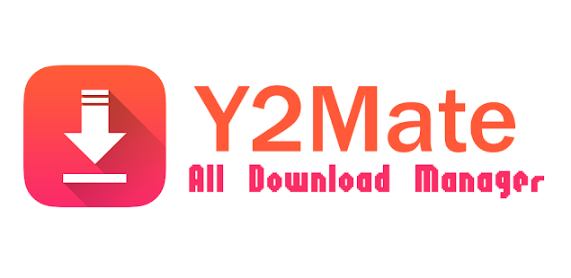
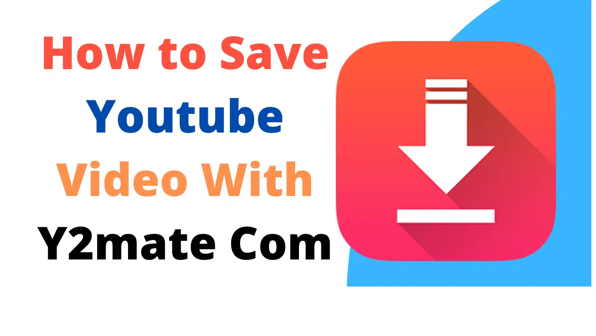

Welcome to Y2Mate, your go-to solution for free and fast YouTube video downloads! Easily convert and download your favorite YouTube videos to MP4 or MP3 formats with no registration required. Simply paste the YouTube URL, choose your desired format, and start downloading in high quality right away. Whether you want to watch videos offline or save music, Y2Mate makes it simple and hassle-free!
Y2Mate - Free YouTube Downloader & Converter
Download videos from YouTube quickly and easily in MP4 or MP3 format. Y2Mate is 100% free, with no registration required.
Convert YouTube Videos to MP4 or MP3
Whether you want to save a video for offline viewing or extract just the audio, Y2Mate lets you convert content in seconds.
What happened to Y2Mate?
Y2Mate continues to be a reliable tool for downloading YouTube videos, but like many online services, it may occasionally face temporary outages, legal challenges, or changes in its operations. If you're experiencing issues accessing Y2Mate, it could be due to updates or server maintenance. We recommend checking back later or exploring alternative options for video downloads if necessary.
Safe, Fast & Easy to Use
Just paste the YouTube video link, choose your desired format, and hit download. It’s that simple—no software or plugins needed.
- Paste your YouTube video link into the input box.
- Select MP3 or MP4 as your preferred format.
- Click the download button to start saving your video.
Author: Y2Mate Team
Y2Mate is developed and maintained by a dedicated team of professionals who are passionate about making online video downloading easier and more accessible. Our goal is to provide a fast, free, and secure solution to download YouTube videos in multiple formats.
For inquiries or support, feel free to contact us at support@y2mate official site
Follow us on social media for the latest updates and tips:
To access Y2Mate, simply follow these easy steps:
- Visit www.y2mate.com in your browser.
- Paste the YouTube video URL you want to download into the search bar.
- Select your preferred format (MP3 or MP4) and click the download button.
- Once the download is complete, enjoy your video or music offline!
Access Y2Mate quickly and start downloading your favorite videos with ease.
Conclusion
In conclusion, Y2Mate offers a simple, fast, and reliable way to download and convert YouTube videos to MP4 or MP3 formats. With no registration required and easy-to-use features, it’s the perfect tool for all your video downloading needs. Start using Y2Mate today and enjoy unlimited access to your favorite YouTube content, anytime, anywhere!